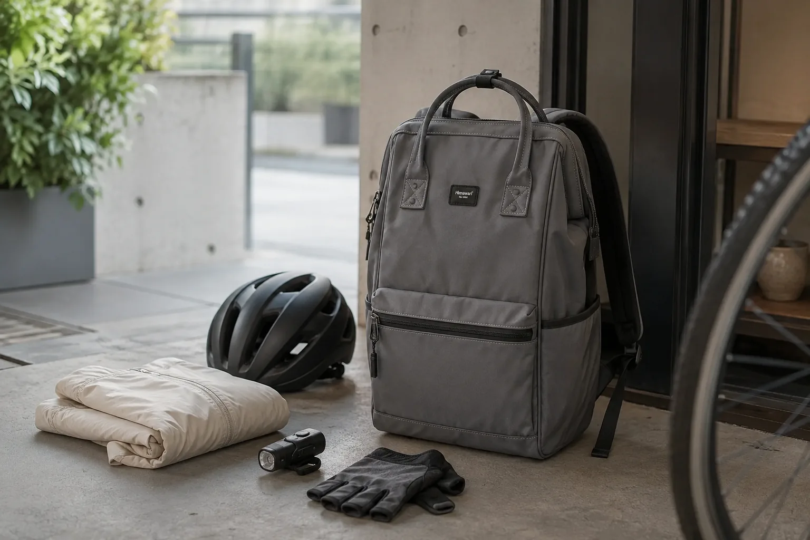

자전거 출근을 계획할 때 백팩을 살피는 순서

자전거 출근을 계획하면 업무 짐을 어디에 둘지부터 고민하게 됩니다. 평소 지하철에서 쓰던 백팩을 그대로 메더라도 이동하는 조건은 달라집니다. 가방을 메고 걷는 모습과 자전거를 이용할 때의 동작, 회사에 도착한 뒤 물건을 꺼내는 순서까지 생각할 필요가 있습니다. 백팩을 고르는 일은 자전거와 필요한 장비의 준비와 별개입니다. 가방에서는 실제 짐과 끈, 여밈이 어떤 상태로 이동하는지를 먼저 살펴볼 수 있습니다.
출근 짐을 펼치면 자전거로 이동하는 날에도 꼭 필요한 것이 무엇인지 보입니다. 업무 기기와 자료, 개인 소지품 가운데 그날 사용할 것만 고르고 다른 날을 위해 넣어두었던 물건은 따로 둡니다. 회사에 이미 있는 물건이라면 계속 운반할 필요가 있는지도 실제 근무 조건에서 판단하세요. 가방의 빈 공간을 채우기보다 출발부터 퇴근까지 사용할 순간을 적으면 가져갈 묶음과 현장에 둘 묶음을 구분하기 쉽습니다.
실제 짐을 넣고 보는 위치
준비한 짐을 넣은 뒤 안정된 장소에서 백팩을 메어봅니다. 제품의 사용 안내에 따라 조절할 수 있는 부위를 살피고 양쪽 끈이 비틀렸거나 한쪽으로 내용물이 몰린 곳이 있는지 확인합니다. 빈 가방으로 정했던 위치와 짐을 담은 뒤의 위치가 다를 수 있으므로 실제 상태를 기준으로 봅니다. 한 번의 조절로 모든 조건을 정하려 하기보다 불편한 부분이 내용물의 자리 때문인지 끈의 놓임 때문인지 나누어 살펴볼 수 있습니다.
자전거와 가방의 접촉 위치는 출발 전에 실제 장비에서 확인할 부분입니다. 긴 끈이나 개인 장식이 어느 방향으로 늘어지는지 보고 제품이 안내하는 방법으로 정리합니다. 기존에 없는 연결 장치를 임의로 추가해 고정하려 하기보다 가방과 자전거 각각의 사용 조건을 확인하세요. 걸을 때 괜찮았다는 사실만으로 모든 이동 동작이 같다고 판단하지 않습니다. 확인할 여유가 있는 안정된 자리에서 짐과 장비를 함께 보는 준비가 필요합니다.
기기와 서류가 함께 있다면 단단한 충전 도구와 용기가 닿는 면도 살핍니다. 전자기기 수납을 제품명에서 짐작하지 않고 실제 크기와 가방 구조를 대조하세요. 서류는 닫힌 파일로 묶고, 물병 등 용기는 닫힘과 운반 방향을 각각 확인할 수 있습니다. 내용물을 고정하는 방식이 안내되어 있다면 그 범위에서 사용하고, 가방을 닫기 위해 강하게 눌러야 하는 상태라면 짐을 다시 나누어볼 이유가 생깁니다.
이번 비교의 제품 예시로 Himawari No.9290 제품 정보를 참고할 수 있습니다. 이 모델을 자전거 출근의 후보로 살필 때도 실제 업무 짐을 담은 상태에서의 동작이 기준입니다. 노트북과 파일을 꺼낸 뒤 개인 소지품을 찾는 순서를 확인하고, 자전거 이용에 필요한 조건은 각 장비의 설명과 실제 이동 조건에서 따로 판단합니다. 제품 이름에 자전거 용도가 적혀 있지 않아도 임의로 전문 기능을 덧붙여 설명할 필요는 없습니다.

날씨가 바꾸는 귀가 짐
날씨에 따라 외출 중 쓰는 옷과 개인 준비물이 달라질 수 있습니다. 출근할 때의 예보만 보지 않고 퇴근 무렵의 조건을 함께 확인하세요. 젖거나 사용한 물건이 생길 수 있다면 개인 자료와 구분해 돌아올 묶음을 정합니다. 백팩이 모든 물기를 막아준다고 가정하기보다 각 물건의 보관 조건과 가방의 제품 안내를 확인합니다. 별도 운반이 필요한 경우에는 실제로 관리할 짐의 개수와 이동 방법까지 생각해야 합니다.
예를 들어 회사에서 옷을 바꿔 입는 계획이라면 출발할 옷과 돌아올 옷의 상태가 달라집니다. 마른 개인 옷을 꺼낸 뒤 사용한 물건을 어느 주머니에 넣을지 준비할 수 있습니다. 가방 깊은 곳에서 옷을 찾느라 업무 도구까지 모두 꺼내야 한다면 배치를 바꿔볼 수 있습니다. 일정에 따라 필요한 묶음이 달라지므로 항상 같은 양을 챙기는 방식보다 그날의 교체 계획을 기준으로 정리하면 됩니다.
회사에 도착하면 개인 짐을 둘 수 있는 위치와 장비 보관 안내를 확인합니다. 백팩을 내려놓는 자리와 업무를 시작하는 자리가 다를 경우에는 필요한 도구만 먼저 꺼내도록 구성할 수 있습니다. 출입에 쓸 확인 수단을 손에 들었다면 사용 뒤 정한 곳에 돌려놓으세요. 도착 후 여러 물건을 다른 장소에 두었다면 퇴근할 때 회수할 범위도 함께 늘어납니다. 어느 묶음을 어디에 남겼는지 알아두면 귀가 준비가 구체적입니다.
출근 길의 가방과 퇴근 길의 가방
퇴근할 때에는 오전에 꺼냈던 물건이 가방으로 돌아왔는지 확인합니다. 충전 도구와 개인 옷, 파일이 서로 다른 위치에 있었다면 각각의 자리를 살펴봅니다. 새로 받은 자료나 물건을 추가할 경우에는 기존 배치를 누르지 않는지 보고 사용한 물건 묶음과 구분합니다. 출발 때의 여밈과 끈 점검을 다시 하는 이유는 하루 동안 내용물과 옷차림이 달라졌을 수 있기 때문입니다. 같은 백팩이어도 그때의 상태를 기준으로 볼 필요가 있습니다.
귀가 후에는 사용한 물건을 먼저 꺼내고 각 제품의 관리 안내에 맞춰 정리합니다. 가방에 습기나 오염이 있다면 실제 남은 상태를 살핀 뒤 표시된 방법을 확인하세요. 다음날의 출근 도구를 담기 전에 오늘만 쓴 물건을 따로 보관할 수 있습니다. 자전거와 필요한 장비의 상태는 해당 사용 안내에 따라 별도로 살핍니다. 가방 정리에서 발견한 것을 다른 장비의 기능으로 해결할 수 있다고 짐작하지 않고 각각의 준비 범위를 유지하면 됩니다.
반복해서 자전거로 출근할 계획이라면 실제로 불편했던 순간을 구체적으로 남겨볼 수 있습니다. 옷을 꺼내려면 파일을 빼야 했는지, 개인 장식이 특정 동작에서 걸렸는지, 퇴근할 때 짐이 늘어난 이유가 무엇인지 적습니다. 그 내용에 따라 백팩의 묶음이나 운반 방법을 바꿀 수 있습니다. 짐을 더 작게 만드는 목표보다 자신의 실제 업무 도구와 이동 조건을 함께 확인한 구성이 유지되는지가 다음 선택의 기준이 됩니다.